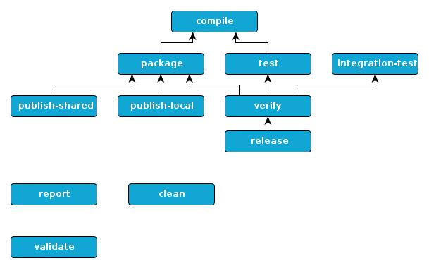

<h1>Default lifecycle</h1> EasyAnt cames with a default lifecycle. This default lifecycle is a set of predefined <a href="ExtensionPoint.html">extension points</a> for the common needs. Each phase is considered as an essential step of the build process. <div id="note"> Note : Even if EasyAnt provides you a default lifecycle we never lock you in. So you're able to add your own extension points or to override existing ones. </div> Here is a graphical representation of the default lifecycle.  <p> Standard <a href="buildtypes/buildtypes.html">build types</a> import the default lifecycle. It's buildtype responsability to wire plugins on the default lifecycle. Users can bind or rebind targets on it. This can be achieved with <a href="anttasks/BindTarget.html">bindtarget ant task</a>. </p> <p> Plugins can provides additionnal <a href="ExtensionPoint.html">extension points</a>. Plugins typically add low-level tasks to one or more extension-points. For example, a plugin can contribute to processing sources before compilation, you will in that case plug your own target to "abstract-compile:compile-ready" extension-point". This contributes to have a dynamic lifecycle. Default lifecycle is here to bring conventions through high level targets. It ease to memorize common steps. </p>